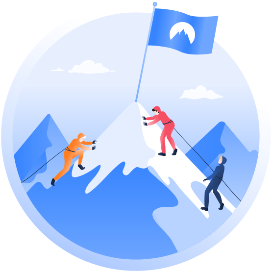
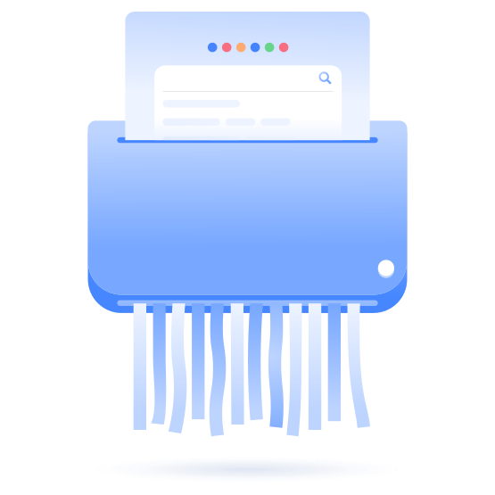

Your IP: 192.168.1.1 · ISP: Jio · Your Status:
Unprotected
Pricing
Features
Servers
What is a VPN?
Download VPN
Blog
Business VPN
Help
Log in
Meet NordVPN
Online security starts with a click. And the story of the leading VPN
provider starts with a vision.

Our mission
We strive to make the internet better than it is today. It can be free
from online threats, censorship, and surveillance, as envisioned in
1989 — the year the World Wide Web was invented.
How it all started
The Spark
NordVPN was launched by childhood friends in 2012. They had
spent a lot of time in different parts of the world, but saw the
same picture: growing internet censorship, content control, and
intrusive government surveillance. In other words, they saw a
rapidly growing need for an internet security tool that’s
easily accessible to everyone.
10 years of NordVPN
From first users to becoming the world’s leading VPN.
Discover Our Story
Who we are now
Nordic Ideals
NordVPN takes its inspiration from the Nordic ideals of confidence,
trust, and innovation. We value our customers’ freedom of choice
and strive to be innovative with our technology.
Creating a safer and better internet
VPN Trust Initiative
NordVPN is a founding member of the VPN Trust Initiative (VTI). VTI
is aimed at educating the public about cybersecurity and setting
quality standards for the whole VPN industry. With it, we hope to
improve VPN services and help people stay safe online, no matter
which provider they choose.
Social responsibility
Internet freedom is one of our core values, so we’re always involved
in digital rights projects. We giveothers emergency VPN access to
help fight surveillance and censorship, materially support causes
focusing on human and digital rights, and work hard to educate the
public about the importance of cybersecurity.
Bug bounty
Nobody’s perfect. To help improve the quality and security of
NordVPN services, we’ve launched a generous bug bounty program. This
way, both ordinary people and professionals can be rewarded for
uncovering vulnerabilities in our network and protecting our users.
Audits
Audits can reveal weaknesses — and strengths. We routinely submit
our apps to independent researchers for thorough security testing,
fixing any flaws uncovered. We also rigorously audit our vendors for
reliability. Finally, NordVPN was the first VPN to have its no-log
policy audited independently — a practice that has since been
adopted by the rest of the VPN industry.
NordVPN manifesto
Our mission is to make Tim Berners-Lee’s vision of a truly open For
this reason, our VPN servers keep no logs. If someone asks us about
you, we have nothing to share. We are free internet enthusiasts who
believe in a common, secure future online. We support fighters for
human rights, journalists, volunteers in conflict zones, information
activists, and anyone who believes in the power of the open web as
imagined by Mr. Berners-Lee.
In the spirit of transparency, we’ll do everything we can to keep you
updated about all aspects of our service, from server status upgrades
to occasional glitches. We aim to create a lasting relationship of
mutual trust with you, the customers who share our deeply held values.
For this reason, our VPN servers keep no logs. If someone asks us
about you, we have nothing to share. We are free internet enthusiasts
who believe in a common, secure future online. We support fighters for
human rights, journalists, volunteers in conflict zones, information
activists, and anyone who believes in the power of the open web as
imagined by Mr. Berners-Lee.
In the spirit of transparency, we’ll do everything we can to keep you
updated about all aspects of our service, from server status upgrades
to occasional glitches. We aim to create a lasting relationship of
mutual trust with you, the customers who share our deeply held values.

Career at NordVPN
Enough about us — let’s talk about you. We’re always looking for team
members to help turn our shared dream into reality.
See Open Positions
NORDVPN
About us
Careers
VPN Free Trial
VPN Routers
Reviews
Student & Employee Discount
Refer a Friend
Research Lab
VPN APPS
About us
Windows
macOS
Linux
Android
iOS: iPhone/iPad
Chrome
Firefox
Edge
ENGAGE
What Is a VPN?
IP Lookup
What Is My IP?
Cybersecurity Glossary
Social Responsibility
Customer Stories
Press Area
Become a Partner
HELP
Support Center
Tutorials
FAQ
Privacy Policy
Cookie Preferences
Terms of Service
Contact Us
FOLLOW US
Facebook
Twitter
LinkedIn
YouTube
Instagram
DISCOVER
Nord Security
NordLayer
NordPass
NordLocker
Made as an educational website Project by Gurpreet Singh